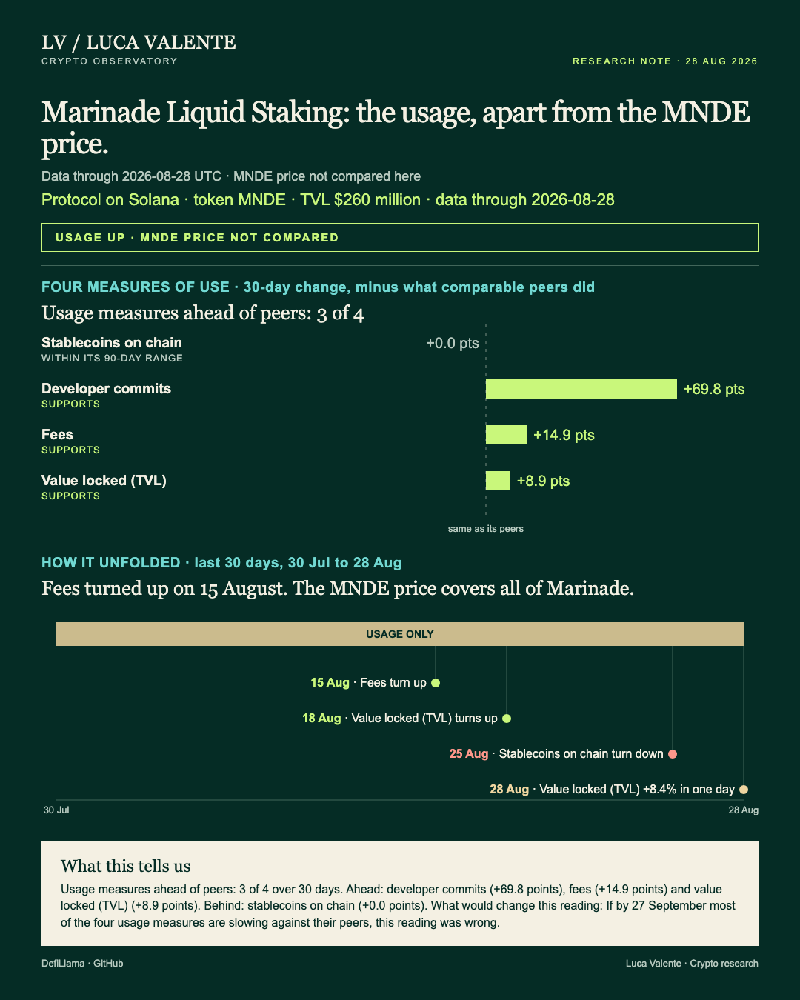

15 September 2026
SUNSwap V2: Trading And Fees Outrun Stablecoins
Two of SUNSwap V2's usage lines jumped together.
Training notes, written from historical data to practise the method. They are not part of the published series and are not in the archive or the feed.
Two of SUNSwap V2's usage lines jumped together.

Marinade Liquid Staking ended 28 August with deposits at a 90-day high and its chain's stablecoin balance up over the month by the group median.

Fees on Hyperliquid's spot order book fell 21.2% in a single day, and the broader usage picture is still ahead of its peer group.

Which of Meteora DLMM's usage measures turned up before its fees jumped 94.5% in a day?

A single loud trading day sits on top of a month that otherwise looks flat, and Polygon's usage lines moved the other way underneath it.

August 6, and Tezos's usage lines are trailing peers while its price barely moves from day to day.


I don't know yet whether Jupiter's price gain means more than the numbers behind it.

Stader's fees jumped 74.4% in a single day, then the month told a different story.

Portal's biggest number belongs to the chain it runs on, and on 10 May stablecoins on Ethereum sit exactly where its bridge peers sit.

Money is flooding onto Sei's stablecoins while its price stays still.